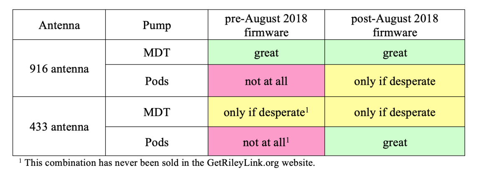

FAQs sur le RileyLink¶
Qu'est-ce que RileyLink? Est-ce que je dois en avoir un ?¶
Oui, RileyLink est une partie requise de Loop. Le RileyLink est un petit appareil qui aide votre iPhone et la pompe (ou Omnipod ... c’est une pompe, aussi) à se parler les uns aux autres. Le RileyLink est une partie critique du système Loop parce que la pompe a besoin de communications sous forme de radio, et l’iPhone a besoin de communications sous forme Bluetooth. RileyLink est comme un traducteur et peut parler les deux formats afin que la pompe et l’iPhone peuvent boucler ensemble. RileyLink aide à obtenir des informations des/depuis votre pompe par des communications radio et de/vers votre iPhone en utilisant Bluetooth.
Où puis-je acheter un RileyLink?¶
Les RileyLinks sont réalisés en production par lots (ce qui signifie qu'ils peuvent parfois être en retard, car une autre production est en cours) et sont disponibles sur GetRileyLink.org.
- If you want to buy a RileyLink for Omnipods, click here.
- If you want to buy a RileyLink for Loop-compatible Medtronic pumps, click here.
Dois-je transporter le RileyLink partout?¶
La réponse courte est oui. Si vous souhaitez que votre boucle continue d’ajuster automatiquement les basals et d’émettre des commandes à votre pompe, vous aurez besoin du RileyLink pour que ces communications puissent se produire. Mettez-le dans un sac à dos, poche, ceinture. Clippez-le dans un sac à dos, une ceinture ou un soutien...mais s'il vous plaît apportez-le avec vous.
Quelles sont les idées pour transporter le RileyLink?¶
Je suis choqué que cette question arrive si souvent...mais voici quelques idées. Veuillez ne pas poster dans le groupe Looped ou Zulipchat pour plus d'idées. Le sujet a été maintes fois débattu , alors utilisez la fonction de recherche dans le groupe Looped pour voir les réponses précédentes. Mais voici quelques exemples pour ceux d'entre vous qui n'utiliseront pas la fonction de recherche. ;)
À quelle distance peut être le RileyLink ?¶
Cette réponse n'est pas toujours la même , elle dépend de l'environnement. En général, le RileyLink est parfait jusqu'à environ 3 à 4 mètres de distance dans la plupart des environnements. Dans certaines situations, vous pourriez avoir le RileyLink qui fonctionne bien même à 6 mètres de distance. D'autres fois, vous devrez peut-être approcher le RileyLink. Qu'est-ce qui influence cette distance? Les plus grandes influences sont (1) le blocage du corps et (2) les environnements "bruyants". Le corps humain est beaucoup d'eau, et l'eau est un excellent bloqueur de communication sans fil. Ainsi, dormir sur un pod et le couvrir entièrement avec votre corps peut réduire la capacité de RileyLink à communiquer avec la lui. Les environnements à forte concentration de signaux sans fil peuvent également interférer avec les communications de RileyLink et il faudra les rapprocher pour fonctionner. Où ce genre de situations pourrait-il se produire? Les concerts, les conférences et les arènes sportives sont assez sujettes à interférer.
Que se passe-t-il si je m'éloigne de mon RileyLink ?¶
Pendant que vous êtes hors de la plage de communication pour votre RileyLink, n’importe quel basal temporaire en cours d’exécution continuera jusqu’à ce qu’il se termine (le plus long basal temporaire que loop définit sont pour une durée de 30 minutes ... ainsi dans les 30 minutes ou moins votre pompe retournera à votre basal standard programmé). Lorsque vous revenez à portée de votre RileyLink, Loop reprend dans les 5-10 minutes sans que vous avez besoin de faire quoi que ce soit.
Quelles sont les différences entre Medtronic et Omnipod RileyLinks?¶
Il existe deux types différents de RileyLink actuellement; la différence étant que l'antenne est optimisée pour la pompe que vous utilisez. Sinon, ils sont identiques.

La nouvelle antenne est-elle pour améliorer les performances avec Loop ?¶
C'est un peu erroné de considérer la nouvelle antenne de bobine de cuivre comme une "amélioration". Ce n'est qu'une mise à jour si vous voulez utiliser un pod. La nouvelle antenne diminuera votre portée si vous essayez de l'utiliser avec une pompe Medtronic. Consultez la FAQ suivante pour une description et un graphique plus détaillés.
Que se passera-t-il si vous utilisez une antenne 916MHz RileyLink avec un Omnipod ? Ou vice versa ?¶
La réponse dépendra d'abord de l'âge du RileyLink et de quel firmware est installé dessus.
Avant août 2018, les RileyLinks avaient un firmware qui ne fonctionne que pour la communication avec la pompe Medtronic. Donc, si vous avez ce firmware ancien sur un RileyLink, votre pod ne pourra jamais s'appairer en utilisant ce RileyLink. Le site GetRileyLink offre un service de mise à jour du firmware RileyLinksi vous voulez le mettre à jour vers le nouveau firmware utilisable par un pod.
Les RileyLinks produit après août 2018, comprennent un firmware plus récent qui est nécessaire pour les communications de la pompe Omnipod. Le nouveau firmware est subg_rfspy 2.2/ble_rfspy 2.0 dans le menu RileyLink, comme ci-dessous lorsqu'il est jumelé à Loop.

En supposant que vous avez le nouveau firmware RileyLink, vous pouvez techniquement utiliser ce RileyLink avec une pompe sur Loop. Mais vous aurez beaucoup de frustrations avec les courtes distances requises entre la pompe/pod et le RileyLink lorsque vous utilisez la "mauvaise" antenne. Même en gardant le RileyLink dans la poche à l'opposé de l'endroit où se trouve votre POD sur votre corps, cela peut déja causer des problèmes avec l'antenne 916MHz. Avec une antenne/pompe mal assortie, le RileyLink doit être très proche et en ligne de mire avec la pompe/pod, qu'il rend la vie quotidienne un peu difficile. Si vous utilisez l'antenne appropriée pour votre pompe RileyLink, les distances que la pompe/pod et le RileyLink est plus acceptable et proche d'un «monde réel» convivial et stable.
En résumé, utilisez définitivement le RileyLink approprié avec l'antenne qui correspond à votre pompe afin que vous soyez moins frustré. Dans un dernier recours, votre vieux RileyLink pourrait fonctionner comme une sauvegarde, mais vous ne l’aimerez pas.

Pouvez-vous échanger l'ancienne antenne sur un RileyLink ?¶
Oui, l'échange d'antenne n'est pas un changement compliqué si vous avez des compétences de soudage basique. L'ancienne antenne peut être retirée facilement en réchauffant la soudure. De nouvelles antennes 433MHz et une casquette de boitier peuvent être trouvées sur le site GetRileyLink. Astuces : utilisez du flux et nettoyez le base de l'antenne avant de la souder. Les antennes mal soudées/bricolé peuvent entraîner une diminution de la portée et de fréquentes pertes de communication entre Loop et les pods.
Combien de temps mon RileyLink durera-t-il entre 2 recharges?¶
RileyLinks peut tenir environ 30-32 heures (plus ou moins) sur une seule charge. Il n'y a aucun moyen de voir le niveau de charge restant, donc la plupart des gens prennent l'habitude de le charger pendant la nuit pendant qu'ils dorment. Le temps réel de recharge est d'environ 1 ou 2 heures; vous saurez qu'il est complètement chargé lorsque le voyant rouge s'éteindra. Après une charge complète, le voyant rouge s'éteindra et s'allumera périodiquement pendant de courtes périodes pour le maintenir en pleine charge alors qu'il est encore sur un chargeur.
Combien de temps durera ma batterie RileyLink ?¶
Un jour ou l'autre, les batteries lithium polymère (LiPo) perdront la capacité de charge et vous voudrez la remplacer si vous remarquez que la batterie ne dure pas toute la journée. Nous utilisons notre batterie actuelle depuis près de 2 ans sans problème.
Comment puis-je savoir le niveau de charge de mon RileyLink ?¶
Vous ne pouvez pas. Il n'y a pas d'indicateur de niveau de charge. Il suffit de le charger tous les soirs, et vous n'aurez pas de problème. La pleine charge de la batterie devrait durer entre 30 et 36 heures selon l'état de la batterie. La recharge prend moins de 2 heures.
Comment dois-je porter le RileyLink ? Cela fait-il une différence?¶
En général, vous voulez prendre l'habitude de porter RileyLink avec vous, oui. Une poche, un mousqueton, une lanière, une ceinture, une ceinture... les options sont infinies. Ce que vous ne voulez pas faire, c'est mettre le RileyLink dans un sac de blocage qui a un blocage RFID (certains sacs de voyage ont ça). L'espacement entre votre RileyLink et votre pompe dépendra fortement de l'environnement dans lequel vous vous trouvez.
RileyLink est-il étanche?¶
Non. Il ne résiste pas non plus à la sueur. Soyez prudent.
Quel est le problème le plus courant pour RileyLink?¶
Les gens ne pousse pas le connecteur de la batterie LiPo quand ils assemblent leur RileyLink. Il faut un peu de pression pour que la prise soit suffisamment insérée. Si elle n'est pas bien enfoncée et bloquée, Loop aura des problèmes plus souvent.
Puis-je utiliser plus d’un RileyLink à la fois ? Cela va-t-il améliorer quelque chose?¶
Oui, vous pouvez en avoir deux allumés, mais ça n’aidera rien, vraiment. Loop n’utilise qu’un RileyLink à la fois. Si vous avez plusieurs RileyLinks activés dans les paramètres de Loop, votre Loo cherchera un autre RileyLink qu'après un échec de connexion pendant plus de 15 minutes sur le RileyLink. Dans mon expérience, il est rare que Loop échoue pendant plus de 15 minutes et un qu'un second RileyLink aiderait dans le même environnement. Si un RileyLink est endommagé et que vous devez passer à un second RileyLink, il n'y a aucun problème avec cela.
Puis-je exécuter Loop sans RileyLink ?¶
Non.